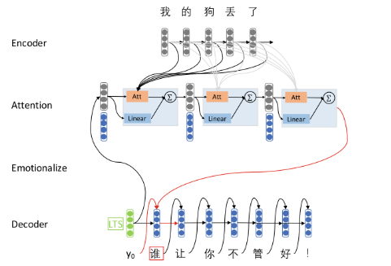

论文笔记《Babbling - The HIT-SCIR System for Emotional Conversation Generation》
介绍
论文介绍了在NLPCC 2017 Shared Task 4 情感对话生成任务中的工作，实现了基于规则的模型与seq2seq模型。
基于规则的模型
使用命名实体识别移除数据中包含实体的句子，使用LTP词性标注过滤了含有代词（如组织名，地名，人名）的句子，并移除含有低频词，无关高频词的句子，最终为每个类别的情感标签准备了100个候选句，随机选择一个作为最终输出。
Seq2seq模型
在传统的seq2seq基础上加入了MTA(Multi-hop Attention)，LTS(Learning to start) 和 Emotion Embedding，架构如下图

Multi-hop Attention
把单层的Attention拓展到多层，每层挑选出更重要的上下文信息，从而将前一层的表示转换为更高层的抽象表示。通过多次Attention，得到原文的更好表示，希望在语义和情感组合的问题上有所帮助。
Learning To Start
传统的seq2seq在生成时起始符号是固定的，不能区分不同的原文输入。LTS机制由编码器的状态决定，生成序列的第一个单词，从而消除起始符号的影响，具备一定的上下文相关性。
总结
- 数据处理，基于规则的生成十分重要
多设计机制让上下文相关性更强烈，回复的情感表达性更强烈。
可生成多个候选，再用打分挑选最优